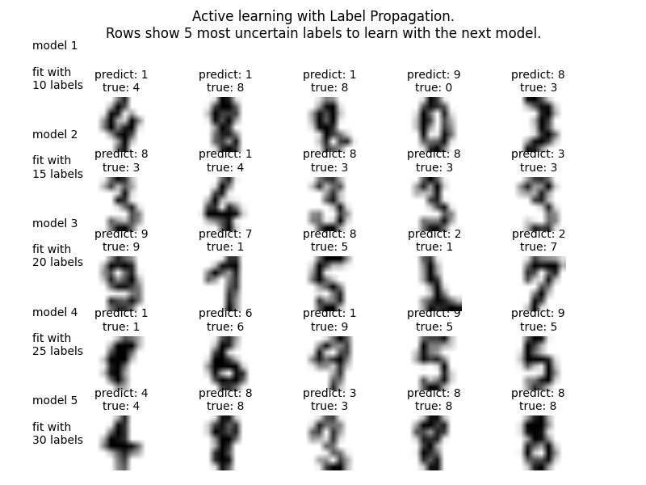

Label Propagation digits active learning¶
Demonstrates an active learning technique to learn handwritten digits using label propagation.
We start by training a label propagation model with only 10 labeled points, then we select the top five most uncertain points to label. Next, we train with 15 labeled points (original 10 + 5 new ones). We repeat this process four times to have a model trained with 30 labeled examples.
A plot will appear showing the top 5 most uncertain digits for each iteration of training. These may or may not contain mistakes, but we will train the next model with their true labels.
Script output:
Iteration 0 ______________________________________________________________________
Label Spreading model: 10 labeled & 320 unlabeled (330 total)
precision recall f1-score support
0 0.00 0.00 0.00 24
1 0.49 0.90 0.63 29
2 0.88 0.97 0.92 31
3 0.00 0.00 0.00 28
4 0.00 0.00 0.00 27
5 0.89 0.49 0.63 35
6 0.86 0.95 0.90 40
7 0.75 0.92 0.83 36
8 0.54 0.79 0.64 33
9 0.41 0.86 0.56 37
avg / total 0.52 0.63 0.55 320
Confusion matrix
[[26 1 0 0 1 0 1]
[ 1 30 0 0 0 0 0]
[ 0 0 17 6 0 2 10]
[ 2 0 0 38 0 0 0]
[ 0 3 0 0 33 0 0]
[ 7 0 0 0 0 26 0]
[ 0 0 2 0 0 3 32]]
Iteration 1 ______________________________________________________________________
Label Spreading model: 15 labeled & 315 unlabeled (330 total)
precision recall f1-score support
0 1.00 1.00 1.00 23
1 0.61 0.59 0.60 29
2 0.91 0.97 0.94 31
3 1.00 0.56 0.71 27
4 0.79 0.88 0.84 26
5 0.89 0.46 0.60 35
6 0.86 0.95 0.90 40
7 0.97 0.92 0.94 36
8 0.54 0.84 0.66 31
9 0.70 0.81 0.75 37
avg / total 0.82 0.80 0.79 315
Confusion matrix
[[23 0 0 0 0 0 0 0 0 0]
[ 0 17 1 0 2 0 0 1 7 1]
[ 0 1 30 0 0 0 0 0 0 0]
[ 0 0 0 15 0 0 0 0 10 2]
[ 0 3 0 0 23 0 0 0 0 0]
[ 0 0 0 0 1 16 6 0 2 10]
[ 0 2 0 0 0 0 38 0 0 0]
[ 0 0 2 0 1 0 0 33 0 0]
[ 0 5 0 0 0 0 0 0 26 0]
[ 0 0 0 0 2 2 0 0 3 30]]
Iteration 2 ______________________________________________________________________
Label Spreading model: 20 labeled & 310 unlabeled (330 total)
precision recall f1-score support
0 1.00 1.00 1.00 23
1 0.68 0.59 0.63 29
2 0.91 0.97 0.94 31
3 0.96 1.00 0.98 23
4 0.81 1.00 0.89 25
5 0.89 0.46 0.60 35
6 0.86 0.95 0.90 40
7 0.97 0.92 0.94 36
8 0.68 0.84 0.75 31
9 0.75 0.81 0.78 37
avg / total 0.85 0.84 0.83 310
Confusion matrix
[[23 0 0 0 0 0 0 0 0 0]
[ 0 17 1 0 2 0 0 1 7 1]
[ 0 1 30 0 0 0 0 0 0 0]
[ 0 0 0 23 0 0 0 0 0 0]
[ 0 0 0 0 25 0 0 0 0 0]
[ 0 0 0 1 1 16 6 0 2 9]
[ 0 2 0 0 0 0 38 0 0 0]
[ 0 0 2 0 1 0 0 33 0 0]
[ 0 5 0 0 0 0 0 0 26 0]
[ 0 0 0 0 2 2 0 0 3 30]]
Iteration 3 ______________________________________________________________________
Label Spreading model: 25 labeled & 305 unlabeled (330 total)
precision recall f1-score support
0 1.00 1.00 1.00 23
1 0.70 0.85 0.77 27
2 1.00 0.90 0.95 31
3 1.00 1.00 1.00 23
4 1.00 1.00 1.00 25
5 0.96 0.74 0.83 34
6 1.00 0.95 0.97 40
7 0.90 1.00 0.95 35
8 0.83 0.81 0.82 31
9 0.75 0.83 0.79 36
avg / total 0.91 0.90 0.90 305
Confusion matrix
[[23 0 0 0 0 0 0 0 0 0]
[ 0 23 0 0 0 0 0 0 4 0]
[ 0 1 28 0 0 0 0 2 0 0]
[ 0 0 0 23 0 0 0 0 0 0]
[ 0 0 0 0 25 0 0 0 0 0]
[ 0 0 0 0 0 25 0 0 0 9]
[ 0 2 0 0 0 0 38 0 0 0]
[ 0 0 0 0 0 0 0 35 0 0]
[ 0 5 0 0 0 0 0 0 25 1]
[ 0 2 0 0 0 1 0 2 1 30]]
Iteration 4 ______________________________________________________________________
Label Spreading model: 30 labeled & 300 unlabeled (330 total)
precision recall f1-score support
0 1.00 1.00 1.00 23
1 0.77 0.88 0.82 26
2 1.00 0.90 0.95 31
3 1.00 1.00 1.00 23
4 1.00 1.00 1.00 25
5 0.94 0.97 0.95 32
6 1.00 0.97 0.99 39
7 0.90 1.00 0.95 35
8 0.89 0.81 0.85 31
9 0.94 0.89 0.91 35
avg / total 0.94 0.94 0.94 300
Confusion matrix
[[23 0 0 0 0 0 0 0 0 0]
[ 0 23 0 0 0 0 0 0 3 0]
[ 0 1 28 0 0 0 0 2 0 0]
[ 0 0 0 23 0 0 0 0 0 0]
[ 0 0 0 0 25 0 0 0 0 0]
[ 0 0 0 0 0 31 0 0 0 1]
[ 0 1 0 0 0 0 38 0 0 0]
[ 0 0 0 0 0 0 0 35 0 0]
[ 0 5 0 0 0 0 0 0 25 1]
[ 0 0 0 0 0 2 0 2 0 31]]
Python source code: plot_label_propagation_digits_active_learning.py
print(__doc__)
# Authors: Clay Woolam <clay@woolam.org>
# Licence: BSD
import numpy as np
import pylab as pl
from scipy import stats
from sklearn import datasets
from sklearn.semi_supervised import label_propagation
from sklearn.metrics import classification_report, confusion_matrix
digits = datasets.load_digits()
rng = np.random.RandomState(0)
indices = np.arange(len(digits.data))
rng.shuffle(indices)
X = digits.data[indices[:330]]
y = digits.target[indices[:330]]
images = digits.images[indices[:330]]
n_total_samples = len(y)
n_labeled_points = 10
unlabeled_indices = np.arange(n_total_samples)[n_labeled_points:]
f = pl.figure()
for i in range(5):
y_train = np.copy(y)
y_train[unlabeled_indices] = -1
lp_model = label_propagation.LabelSpreading(gamma=0.25, max_iter=5)
lp_model.fit(X, y_train)
predicted_labels = lp_model.transduction_[unlabeled_indices]
true_labels = y[unlabeled_indices]
cm = confusion_matrix(true_labels, predicted_labels,
labels=lp_model.classes_)
print('Iteration %i %s' % (i, 70 * '_'))
print("Label Spreading model: %d labeled & %d unlabeled (%d total)"
% (n_labeled_points, n_total_samples - n_labeled_points, n_total_samples))
print(classification_report(true_labels, predicted_labels))
print("Confusion matrix")
print(cm)
# compute the entropies of transduced label distributions
pred_entropies = stats.distributions.entropy(
lp_model.label_distributions_.T)
# select five digit examples that the classifier is most uncertain about
uncertainty_index = uncertainty_index = np.argsort(pred_entropies)[-5:]
# keep track of indices that we get labels for
delete_indices = np.array([])
f.text(.05, (1 - (i + 1) * .183),
"model %d\n\nfit with\n%d labels" % ((i + 1), i * 5 + 10), size=10)
for index, image_index in enumerate(uncertainty_index):
image = images[image_index]
sub = f.add_subplot(5, 5, index + 1 + (5 * i))
sub.imshow(image, cmap=pl.cm.gray_r)
sub.set_title('predict: %i\ntrue: %i' % (
lp_model.transduction_[image_index], y[image_index]), size=10)
sub.axis('off')
# labeling 5 points, remote from labeled set
delete_index, = np.where(unlabeled_indices == image_index)
delete_indices = np.concatenate((delete_indices, delete_index))
unlabeled_indices = np.delete(unlabeled_indices, delete_indices)
n_labeled_points += 5
f.suptitle("Active learning with Label Propagation.\nRows show 5 most "
"uncertain labels to learn with the next model.")
pl.subplots_adjust(0.12, 0.03, 0.9, 0.8, 0.2, 0.45)
pl.show()
Total running time of the example: 1.28 seconds ( 0 minutes 1.28 seconds)